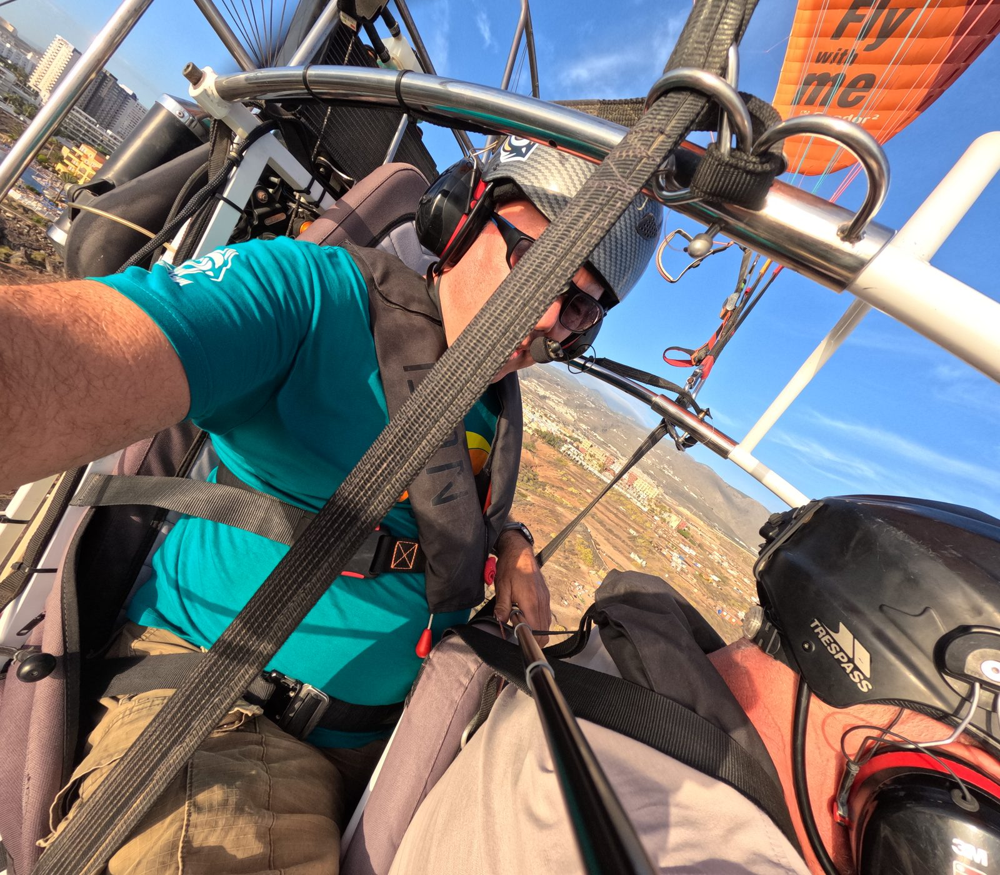
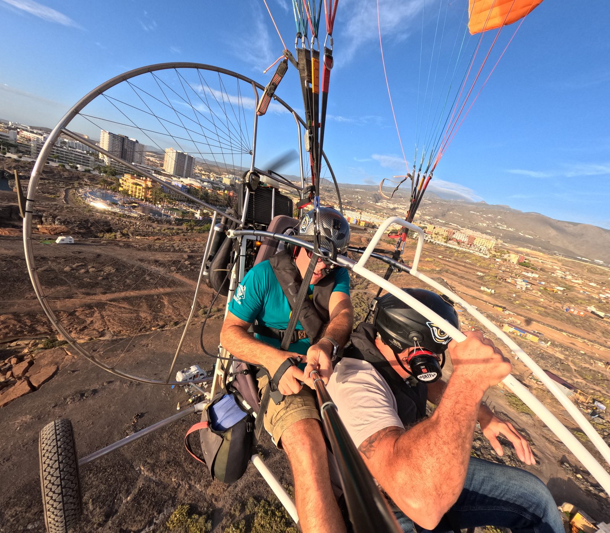
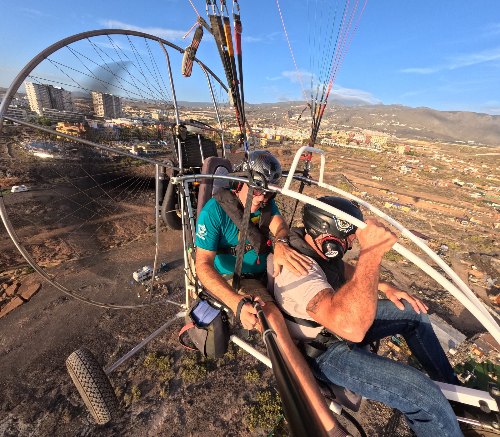
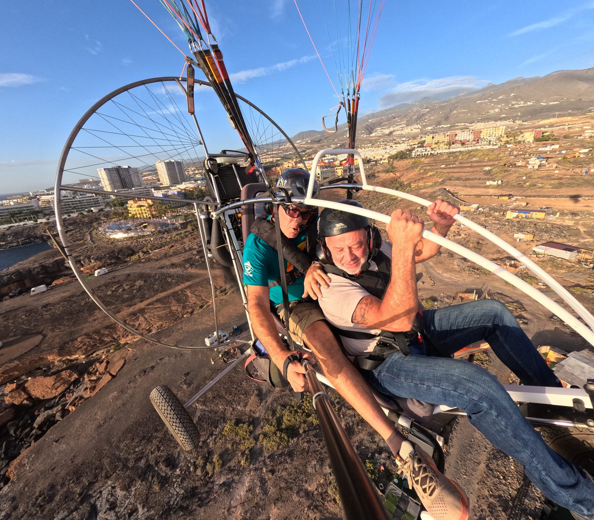
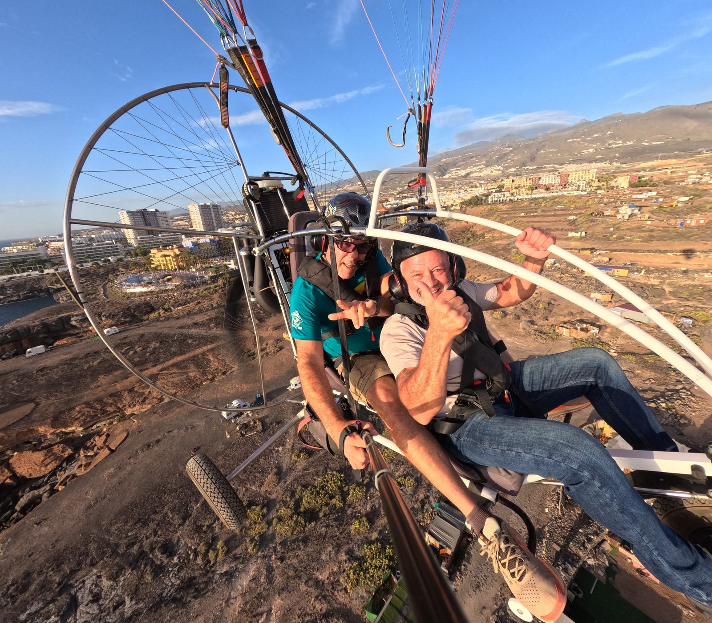
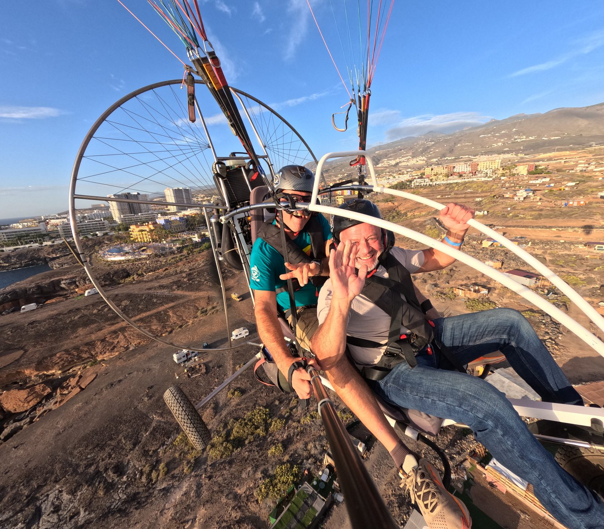
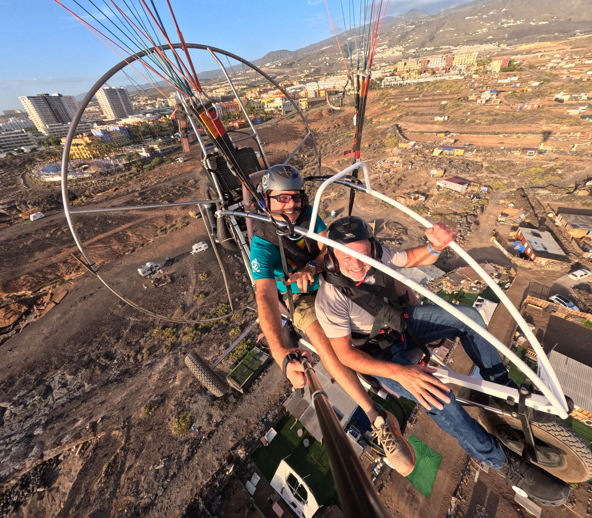
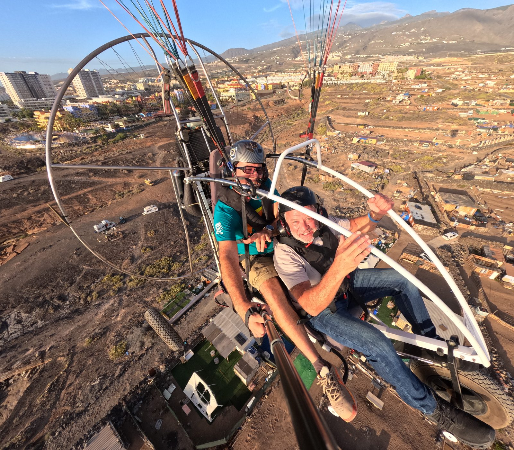

Il paratrike combina la libertà del parapendio con il motore: decolli e atterraggi più flessibili, voli più lunghi e la possibilità di coprire percorsi ampi sopra Tenerife. Un'esperienza adrenalinica ma controllata, perfetta per chi vuole vivere il volo con tutta la sicurezza di un mezzo a motore.
Biposto con pilota professionista. Nessuna esperienza richiesta. Vista a 360° su vulcani, costa e oceano, con la possibilità di rotte personalizzate in base a meteo e preferenze.







Disponibilità soggetta alle condizioni meteo
💬 Contattaci su WhatsApp